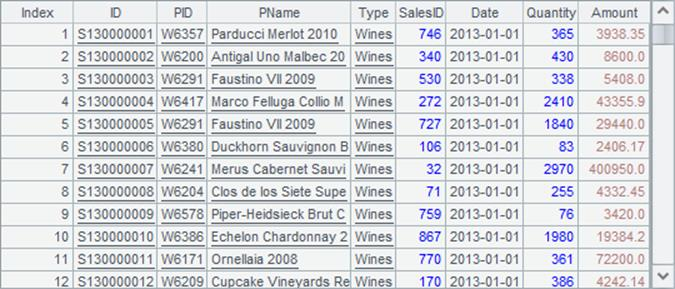
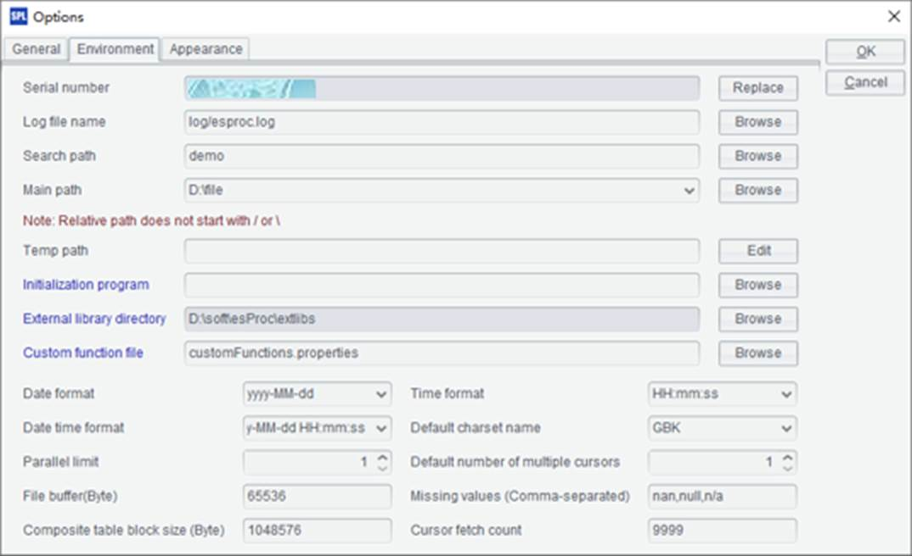
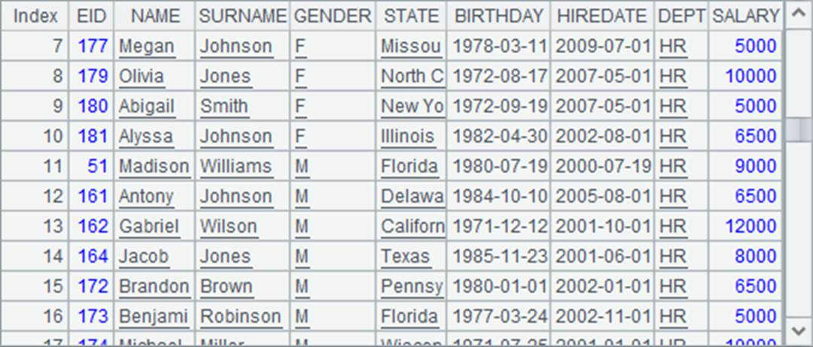
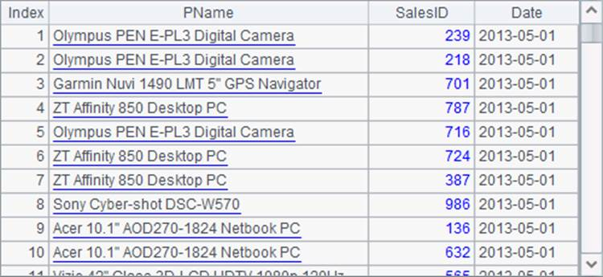

Now click on Start button on the following window to run clustered servers. Click Stop to suspend the server service; after that, you can click Quit to exit the service. Click Reset to initialize and restart the server and to remove all global variables and release memory at the same time.

The node starting action will start the unstarted nodes in the specified node list. We can view the execution information on corresponding node window.
Run ServerConsole.sh to launch the server cluster class under Linux:

The node running information window under Linux is the same as that under Windows:

We can also add the –p parameter in the execution command to launch a clustered server in a non-GUI way to directly execute operations on it:
